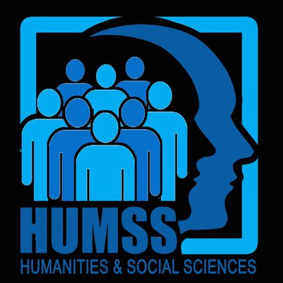

The HUMMS strand is designed for those who wonder what is on the other side of the wall. In other words, you are ready to take on the world and talk to a lot of people. This is for those who are considering taking up journalism, communication arts, liberal arts, education, and other social science-related courses in college.
